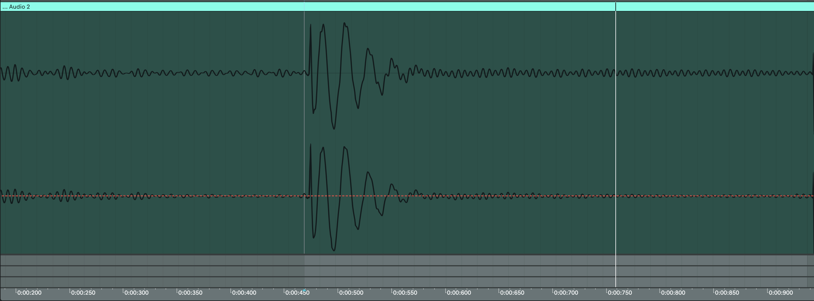
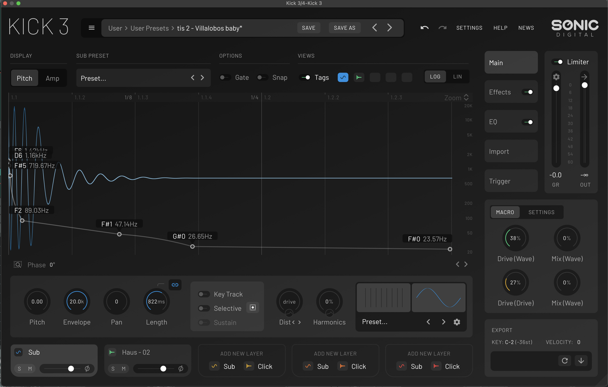
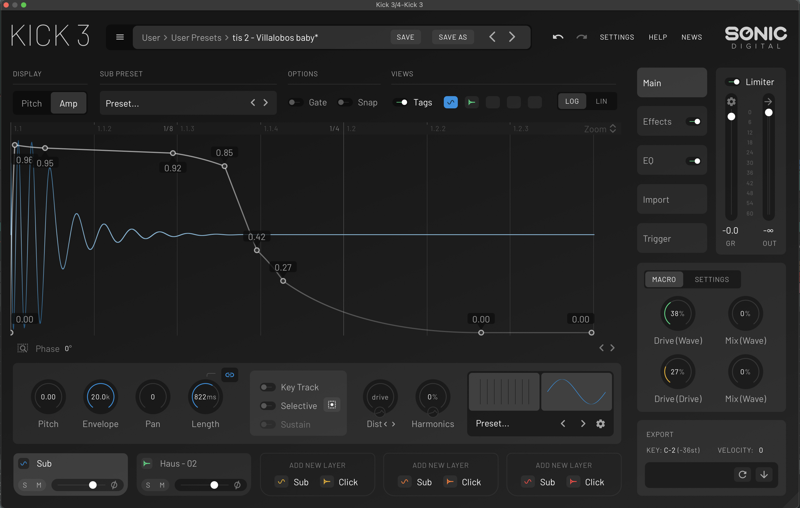
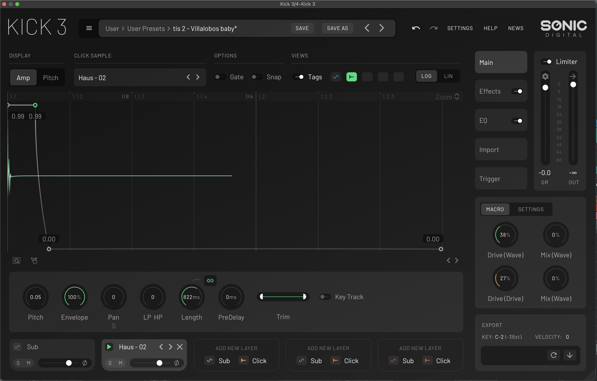
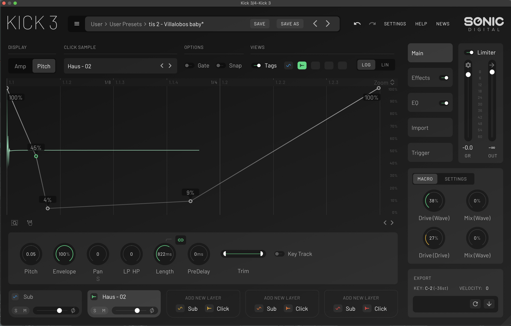
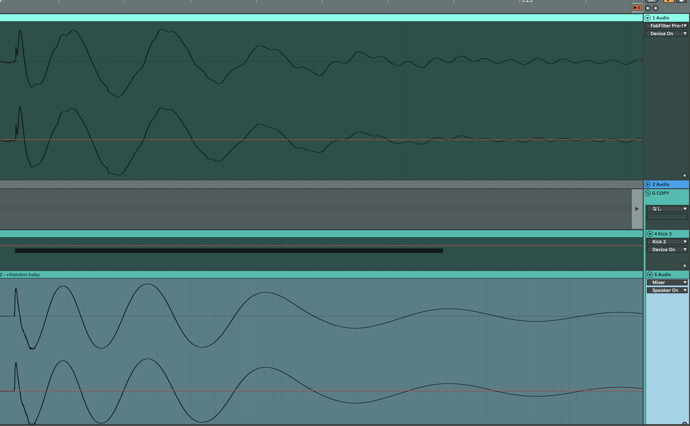

KICK3で、sin波のピッチ、音量のエンベロープを調整して、 極力波形が近くなるようにする。
特に、鳴り始めから最後までの波形の振幅の変化、 つまりピッチ変化の推移を合わせることを重視する。
その際、元のキックの最終的な一番低い音階は Spectrumで確認する。
個人的には、ある程度似てきたら、 完璧に原音へ寄せるよりも、 自分の好きな質感へ調整して、 自分の曲のための音として完成させる。
下の5枚目の写真(上：原曲 下：再現したKICK) ※KICK3 で作った波形が原音と似ているか、書き出して比較します
この曲だと厳密な再現はしてないですが、波形の横幅の推移はかなり近くなっているかと思います。





上の5枚目の写真(上：原曲 下：再現したKICK) ※KICK3 で作った波形が原音と似ているか、書き出して比較します
この曲だと厳密な再現はしてないですが、波形の横幅の推移は割と近くなっているかと思います。
あと、最初の波形2~3周期分だけ音量が大きくて、その後一気に小さくなるような音量変化も、RicardoやCabanneは多い印象です
sin波だけだと高域のアタック感が足りないので、硬めのHIHATのサンプルを短いリリース・ピッチ変化をつけて、KICK3内で重ねています。
下の音声がそのHATだけで再生したもの、sinだけのもの です。